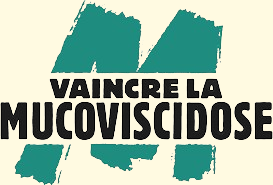

Le Muco-relais est un évènement Sportif à but caritatif. Cet évènement de type course à pied comme vous aurez pu le remarquer sur le logo ;) est organisé tout les ans par des étudiants. L'édition 2024 en est la 6 ème édition
La muco-viscidose est une maladie héréditaire qui se développe dès la naissance. Elle se caractérise par des sécrétions visqueuses dans les poumons et le pancréas ce qui gêne la digestion et la respiration. Aujourd'hui il n'existe pas de remède mais la recherche médical permet d'améliorer la qualité de vie des patients.

Le muco-relais cette année sera dans la forêt de saint-anne sous la forme d'un relais de 8 heure en équipes de 4, l'évènement se déroulera le 18 mai 2024
Parcours du muco-relais